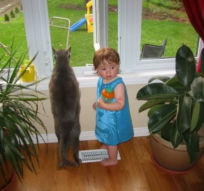

Misha.
0000-0000

Misha was my father's cat, and this was apparent. A quiet soul with adventurous habits, Misha was an indoor cat with outdoor dreams. He was a big kitty with a big heart, and he gave the impression of knowing much more than a cat might know. He is missed.
